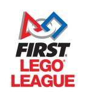
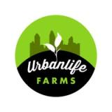

I lead product and technology transformation in complex, regulated businesses, most recently as SVP of Product & Platform at Kind Lending and VP of Product at JPMorgan Chase. Right now I've founded ApexPrime Products, a health product company, while evaluating the next platform/transformation leadership role.
My titles have read Product, Program, and Technology across 20+ years: JPMorgan Chase, loanDepot, Microsoft, Disney, BofA, Wells Fargo, WaMu, IndyMac and Kind Lending. What is the consistent work underneath the titles? Take a complex platform or operating problem, align the business, technology and governance around it, and lead the change through delivery and into real world use.
I stay close to the team and the build the whole way. Across roles that means rolling up sleeves and gathering and shaping requirements, defining epics and backlog priorities, writing specs down to API/ETL detail, mentoring product managers, guiding distributed engineering teams, and carrying work through QA, UAT, and deployment; not just sponsoring from a distance.
Since Kind Lending's restructuring, I've been building ApexPrime Products (physical consumer product, Q4 2026 launch), deliberately staying close to hands-on product building while deciding on the next operating role.
Platform direction, backlog governance, executive/board partnership. The 8,000→380 JPMorgan weighted-scoring model is just one proof point.
Large-scale implementation under regulatory deadline. The 120-branch Empower conversion (9 months vs. 18+) and the $8.8B merger treasury integration are two example proof points.
Scoping an AI/automation solution and owning its path into regulated production. Kind Lending's intake platform and JPMorgan's APDS are the proof points.
Conceived and shipped an automated appraisal-eligibility service (rules engine plus dynamic decisioning logic) through risk, compliance, legal, and audit sign-off. Production IP, not a proof of concept.
Directed (hands-on alongside two backend developers) the build of an AI-driven single-funnel intake system, consolidating PMO, email, help-desk, and informal requests into one funnel.
Directed a full LOS conversion (to Empower) across 120 branches during an M&A integration, while loan volume doubled.
Owned technology strategy and delivery for a $1B+/month mortgage origination platform.
Owned product/technology strategy for a multi-billion-dollar first-mortgage platform; 15 direct, 50+ dotted-line reports across the U.S., India, Philippines.
Owned the Consumer and Loan Agent portal components of the mello™ digital lending ecosystem.
Led M&A technology integration of imortgage's retail channel into loanDepot.
Strategic IT/product consulting for Fortune 500 clients (mortgage, banking, entertainment), including Disney Parks & Resorts and Bank of America.
Earlier career: Washington Mutual, IndyMac, Norman Technologies, Troy Consulting. Full detail in the résumé.
Equities and FX algorithmic trading, crypto, and business ventures like ApexPrime Products LLC.

Coaching kids (my own included) to design, build, and program robots solving real-world challenges. Collaboration, innovation, and discovery, with serious STEM learning underneath the fun.
On-site sorting, packing, and event coordination for the county's leading hunger-relief organization. Every shift makes a direct impact on families in need.

Real physical work (shoveling soil, clearing weeds) that funds youth job training, leadership development, and fresh produce for City Heights.
Music-based sing-alongs for memory-care communities, sparking connection for seniors living with Alzheimer's and dementia, and raising funds for research.